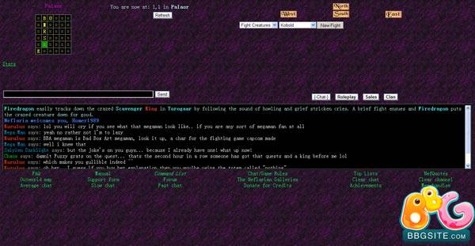

Sr. User Interface Engineer
Sr. Engineer
Really old-school game from 2000 with frames and polling.
Network abstraction with Mediator.js, event-driven paradigm for better ajax.
The WebSocket implementation was moving along, adopted by Chrome
Great Node implementation, but wanted C#
Super efficient websockets for C# applications
What these have in common - emulating a multiplex socket.
All of these things were possible before WebSockets, with much more complexity.
WebSocket chat demo with Alchemy.
var ws = new WebSocket("ws://websockets.com/channel:81");
ws.onopen = function(){ };
ws.onclose = function(){ };
ws.onerror = function(e) { };
ws.send("Hi, Server!");